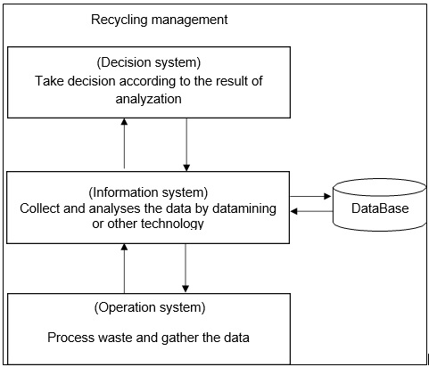

Artificial Intelligence
Application
When we talk about the applications of AI in the activities about waste sorting, we need to know what AI is:
Definition in dictionary Merriam-Webster: a branch of computer science dealing with the simulation of intelligent behavior in computers. The capability of a machine to imitate intelligent human behavior.
Nowadays, in the context of the era of big data, artificial intelligence has been given more complex meanings, its content has become very extensive, and more branches have been extended, such as machine learning.
Machine learning is a field of artificial intelligence that uses statistical techniques to give computer systems the ability to "learn" from data, without being explicitly programmed. Machine learning is the core technology in the field of artificial intelligence. In the era of big data, many popular technologies are developed based on machine learning, including computer vision technology and data mining.
It is a technology that allows computers to learn how to 'see'. The computer captures the material, shape or color of the item through a camera or other sensors, then analyzes these data through machine learning to identify the item.
It is the process of discovering patterns in large data sets involving methods at the intersection of machine learning, statistics, and database systems. Aside from the raw analysis step, it also involves database and data management aspects, data pre-processing, model and inference considerations, interestingness metrics, complexity considerations, post-processing of discovered structures, visualization, and online updating.
With the enhancement of information technology computer capabilities, a large number of extensive and complex data can be stored and analyzed by computers. Data mining can predict the future data by finding the pattern of data existence, so that the information system containing the database becomes an indispensable and important part of providing decision- making for modern businesses.
A term used to refer to data sets that are too large or complex for traditional data- processing application software to adequately deal with. The enterprises have collected more and more data, the volume has growth and the variety has become complicated. Processing data requires new methods, so new technology based on big data has become an important point for enterprise.
Renault has made a commitment to protect the environment. One of the important parts is the realization of a circular economy. The circular economy can not only reduce costs, but more importantly contributes to environmental protection. To achieve a circular economy means to re-use waste, through the recycling of materials, and increase the proportion of recyclable plastics in the fabrication of automobile. In order to achieve this goal, a good coordination between the company's decision system, information system and operating system is required.
In the waste recycling process, a sorting process is required. In many cases, this process needs to be operated manually. For companies engaged in recycling, this will cost a lot of money. But through computer vision technology, we can automatically identify waste products, thereby freeing people and reducing labor costs. At the same time, through the automatic sorting machine, we can record each piece and transmit the data to the company's information system for analysis, that is, to digitalize the sorting.
Example: ZenRobotics specializes in machines that automate the sorting of waste. This machine uses computer vision technology to identify the type of waste in real time, so that the accuracy of machine sorting is greatly improved, and the efficiency is much higher than manual sorting.
Material recycling is an important part of Renault's circular economy concept. With European automobile recycling company Indra, and metal recycling company BOONE CONEMOR as subsidiaries, if Renault is able to apply such machines at the operating system level for the classification of automobile waste materials, the company will invest less in the recycling economy, but the recycling efficiency will be higher. At the same time, the waste material information is recorded and uploaded to the database of the information system, and the data of the recycled materials are analyzed by data mining for different aspects.
For example, analyzing the recycling efficiency of various materials and predicting the future recycling efficiency, the basis for purchasing in future can be provided. And with Big Data, members of the waste and recycling industry can optimize their routes based on historical waste and recycling data collection, which helps reduce emissions by having less trucks on the road, increase the efficiency of collection operations and drive better operational performance.
In this way, artificial intelligence is applied in the recycling management to optimize the supply chain and improve the profit. At the same time, it can help to understand the costumers’ used-cars recycling behavior, and more importantly, reduce the pollution generated at the supply chain.
By applying the artificial intelligence approach to information systems and operating systems, we can obtain and analyze data on waste disposal, thereby providing advice to decision makers to make decisions that are more conducive to business and the environment.
